5. Annexes
Cette page regroupe différentes solutions utilisées dans Galaxy au cours des travaux pratiques
Résoudre les jobs bloqués dans Galaxy
Si après une réactivation de votre VM dans Galaxy vos jobs sont grisés, le gestionnaire slurm installé sur votre serveur est bloqué.
Pour le relancer, suivez les indications du tutoriel STARTbio.
Modifier le type des données
Il peut arriver qu'un fichier, pourtant présent dans votre historique, ne soit pas visible en entrée d'un outil Galaxy. Par exemple il peut arriver que le fichier fastq que vous avez chargé dans votre historique n’apparait pas comme disponible dans l’outil Bowtie.
Pour régler ce problème, vous devez réaliser une conversion du type de fichier. L’outil attend un fichier au format fastqsanger et il est pour le moment seulement fastq.gz.
Pour changer le type d’un fichier, il faut cliquer sur l’icône en forme de crayon. Puis aller dans l’onglet « Datatype ».
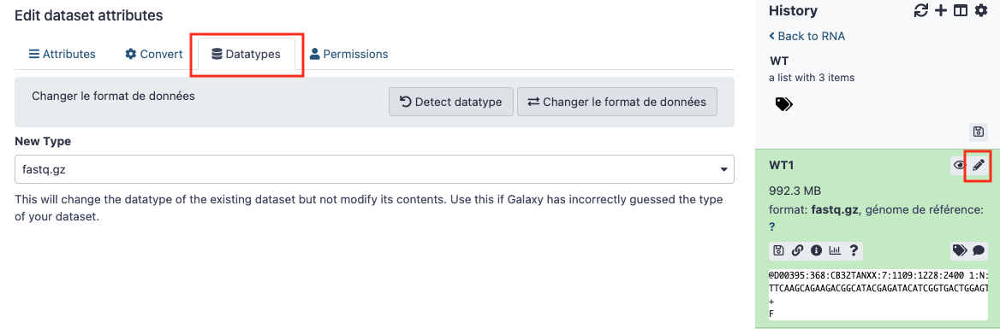
Dans le menu déroulant remplacer « fastq.gz », le type actuel, par « fastqsanger.gz ». Puis cliquer sur "Changer le format des données"
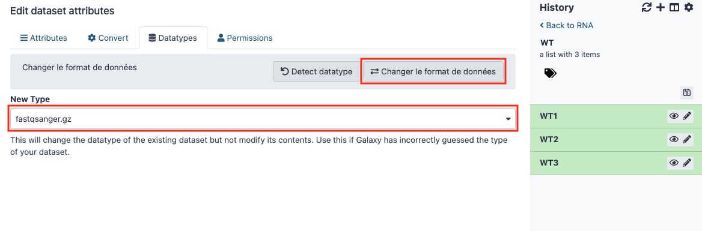
Résoudre les problèmes d'affichage HTML dans Galaxy
Il est possible que les sorties de certains outils ne s'affichent pas dans Galaxy comme par exemple FastQC.
Pour les afficher il faut les autoriser spécifiquement :
- Aller dans le menu "Admin"
- Dans le menu de gauche, dans la partie "Tool Management", choisir "Manage Allowlist"
- Rechercher "FastQC" dans la liste, cliquer sur n'importe quelle case de la ligne. Elle va disparaître et s'afficher dans l'onglet "HTML Rendered"
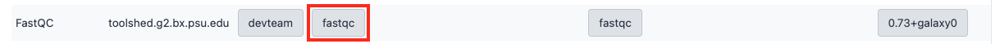
Ce système protège l'injection de code dans les pages HTML.
Copier des fichiers entre histoires
Pour utiliser dans votre histoire actuel un fichier situé dans un autre histoire il faut procéder de la façon suivante :
- Choisir "Copier les jeux de données" depuis le menu "roue crantée" en haut à droite
- Sélectionner les fichiers qui vous intéressent depuis l'histoire source vers l'histoire de destination, vous pouvez aussi indiquer le nom d'une nouvelle histoire
- Cliquez sur "Copy History Items"
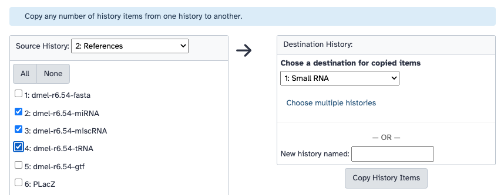
Extraire des éléments d'une collection
Pour extraire des éléments d'une collection, utilisez l'outil Extract dataset en sélectionnant les fichiers à extraire les un après les autre grâce à leur numéro d'index dans la collection.
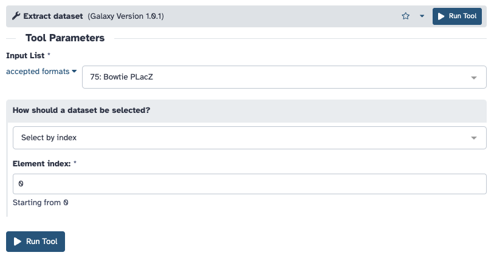
Partage de fichiers dans Galaxy
Isoler les données à partager dans une histoire dédidée
La première étape consiste à copier les données à partager dans une nouvelle histoire.
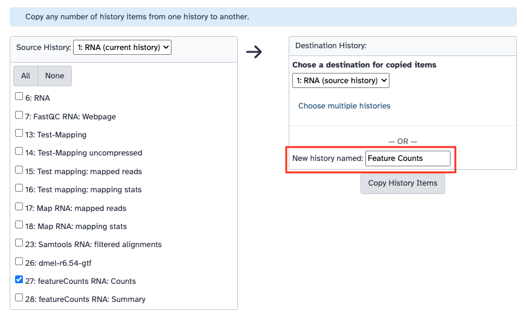
Sélectionnez cette nouvelle histoire, supprimez la collection, affichez les éléments invisibles et rendez-les visibles
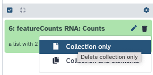

Renommez vos éléments pour les rendre plus facile à trouver.
Partager votre histoire
Pour partager votre histoire, il faut tout d'abord sélectionner « Partager et Publier » dans le menu d'option tout en haut à droite puis choisir « Make History Accessible ».
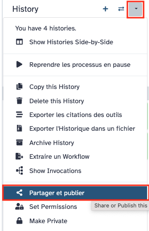 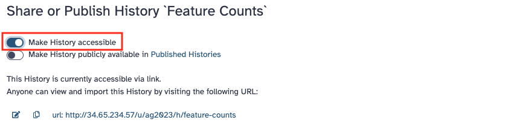
Retournez de nouveau dans le menu en haut à droite, cliquez sur « Exporter l’historique dans un fichier » puis sur le lien "Click here to generate a new archive for this history".
Conserver ce lien car c'est lui qui vous permet de partager votre histoire avec d'autres serveurs Galaxy. Vous pouvez aussi cliquer sur le lien pour récupérer l'historique en local. Attention les données génomiques peuvent être volumineuses !
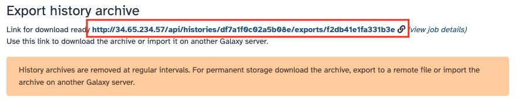
Importer une histoire partagée
Pour importer une histoire partagé, allez dans le menu "Utilisateur" puis choisir "Histories". Cliquez sur "Import history" en haut à droite.
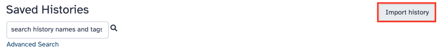
Sélectionnez "Export URL from another Galaxy instance" puis collez l'URL de l'histoire que vous voulez récupérer dans le champ "Archived History URL".
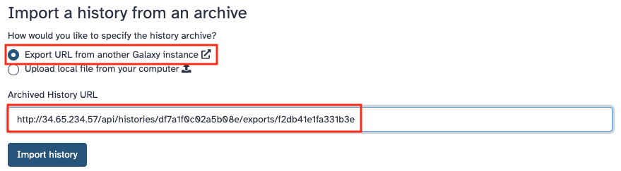 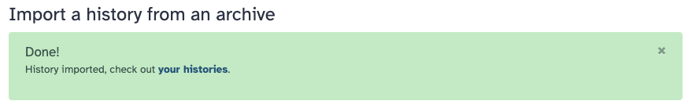
Une fois importé, pensez à le renommer pour lui donner un nom plus explicite.
Sauvegarde d'une machine virtuelle
Création d'un instantané
Vous pouvez créer un instantané pour sauvegarder votre disque à des étapes importantes en cas de problème. Par exemple une fois toutes les tutoriels terminés avant de démarrer votre analyse personnelle ou pour augmenter l'espace disponible.
- Allez dans l'application "Instances de VM", cliquer sur le nom de la VM
- Dans la section "Stockage" cliquez sur le nom du disque de démarrage
- Puis cliquez sur "Créer un instantané" dans la barre de menu du haut
- Pramètres
- Nom : tp-galaxy-ag2025
- Description : Sauvegarde de la VM du TP AG2025 après les 2 jours de tutoriels
- Type de source de l'instantané : Disque
- Disque source : test-galaxy-4
- Type : instantané
- Emplacement : Régional - europe-north1
Attention
Choisissez l'emplacement là où vous avez créé votre VM.
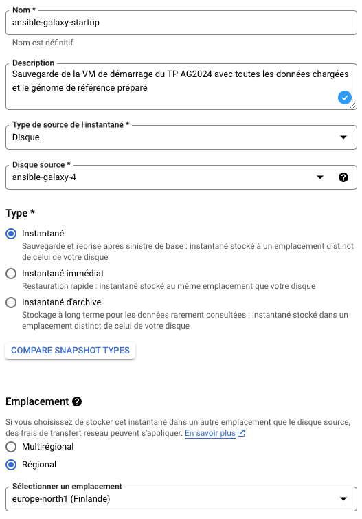
Vous pouvez obtenir plus d'information en consultant la documentation Créer des instantanés de disque
Utilisation d'un instantané
En cas de problème avec votre VM vous pouvez repartir d'une sauvegarde sans être obligé de tout réinstaller.
- La première étape consiste à créer une VM comme vous l'avez déjà fait en suivant le tutoriel StartBio.
- Puis dans disque de démarrage cliquer sur "Modifier" et dans l'onglet "Instantanés" choisir celui que vous avez créé.
- Vous avez la possibilité d'augmenter la taille du disque si vous souhaitez obtenir plus d'espace sur votre VM.
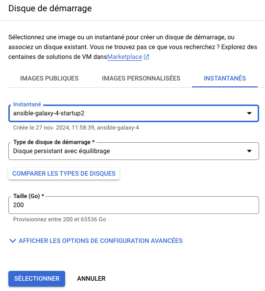